Fusionchart의 'Single Series' 타입을 확인할 수 있는 예제입니다. 차트의 타입은 함수 'changeType'를 사용하여 스크립트로 변경할 수 있습니다.
FusionChart 가이드 : https://www.fusioncharts.com/dev/fusioncharts
FusionChart의 타입 목록 : https://www.fusioncharts.com/dev/chart-guide/list-of-charts/
스크립트로 'Single Series' 타입 변경하기
화면에 'Single Series' 차트 타입이 Radio로 구성되어 있습니다. 항목을 선택(클릭)하면 차트 타입이 변경됩니다.
CASE 1. 'Column 2D' 타입
그림 1.브라우저(Chrome) 실행 예시 - 'Column 2D' 타입
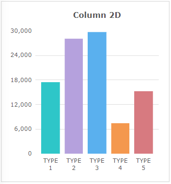
CASE 2. 'Column 3D' 타입
그림 2.브라우저(Chrome) 실행 예시 - 'Column 3D' 타입
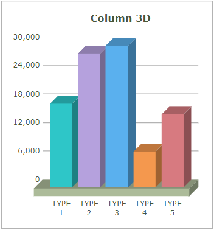
CASE 3. 'Line 2D' 타입
그림 3.브라우저(Chrome) 실행 예시 - 'Line 2D' 타입
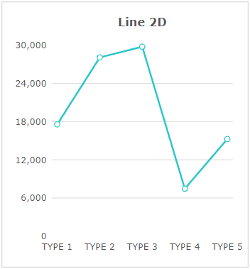
CASE 4. 'Area 2D' 타입
그림 4.브라우저(Chrome) 실행 예시 - 'Area 2D' 타입
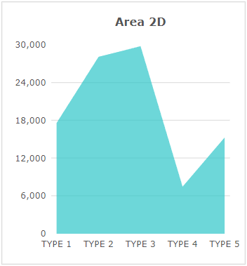
CASE 5. 'Bar 2D' 타입
그림 5.브라우저(Chrome) 실행 예시 - 'Bar 2D' 타입
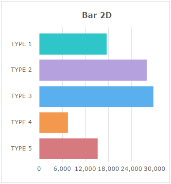
CASE 6. 'Bar 3D' 타입
그림 6.브라우저(Chrome) 실행 예시 - 'Bar 3D' 타입
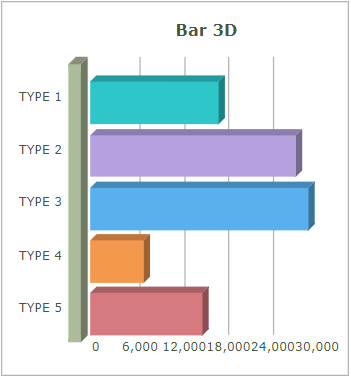
CASE 7. 'Pie 2D' 타입
그림 7.브라우저(Chrome) 실행 예시 - 'Pie 2D' 타입
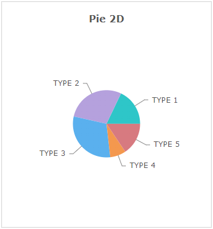
CASE 8. 'Pie 3D' 타입
그림 8.브라우저(Chrome) 실행 예시 - 'Pie 3D' 타입
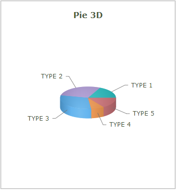
CASE 9. 'Doughnut 2D' 타입
그림 9.브라우저(Chrome) 실행 예시 - 'Doughnut 2D' 타입
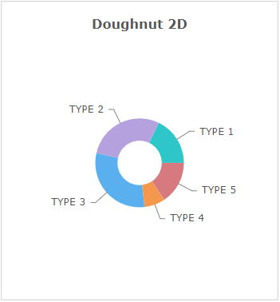
CASE 10. 'Doughnut 3D' 타입
그림 10.브라우저(Chrome) 실행 예시 - 'Doughnut 3D' 타입
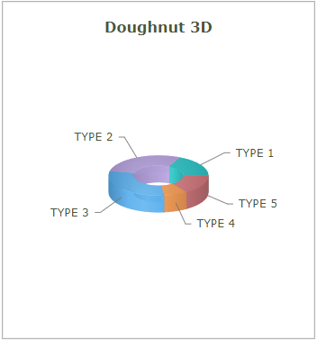
CASE 11. 'Pareto 2D' 타입
그림 11.브라우저(Chrome) 실행 예시 - 'Pareto 2D' 타입
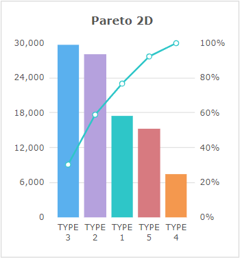
CASE 12. 'Pareto 3D' 타입
그림 12.브라우저(Chrome) 실행 예시 - 'Pareto 3D' 타입
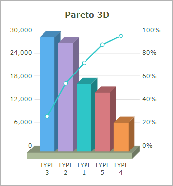
FusionChart의 함수 'changeType'를 사용하여 구현합니다.
스크립트
// 'Single Series' 타입 변경 예시 // Fusionchart 'cht_exam1'의 차트 타입을 'Column 2D'으로 변경합니다. cht_exam1.changeType('column2d'); // Fusionchart 'cht_exam1'의 차트 타입을 'Column 3D'으로 변경합니다. cht_exam1.changeType('column3d'); // Fusionchart 'cht_exam1'의 차트 타입을 'Line 2D'으로 변경합니다. cht_exam1.changeType('line'); // Fusionchart 'cht_exam1'의 차트 타입을 'Area 2D'으로 변경합니다. cht_exam1.changeType('area2d'); // Fusionchart 'cht_exam1'의 차트 타입을 'Bar 2D'으로 변경합니다. cht_exam1.changeType('bar2d'); // Fusionchart 'cht_exam1'의 차트 타입을 'Bar 3D'으로 변경합니다. cht_exam1.changeType('bar3d'); // Fusionchart 'cht_exam1'의 차트 타입을 'Pie 2D'으로 변경합니다. cht_exam1.changeType('pie2d'); // Fusionchart 'cht_exam1'의 차트 타입을 'Pie 3D'으로 변경합니다. cht_exam1.changeType('pie3d'); // Fusionchart 'cht_exam1'의 차트 타입을 'Doughnut 2D'으로 변경합니다. cht_exam1.changeType('doughnut2d'); // Fusionchart 'cht_exam1'의 차트 타입을 'Doughnut 3D'으로 변경합니다. cht_exam1.changeType('doughnut3d'); // Fusionchart 'cht_exam1'의 차트 타입을 'Pareto 2D'으로 변경합니다. cht_exam1.changeType('pareto2d'); // Fusionchart 'cht_exam1'의 차트 타입을 'Pareto 3D'으로 변경합니다. cht_exam1.changeType('pareto3d');
소스 코드 본문
<w2:fusionchart labelNode="type" ref="data:dlt_chartData_1" seriesColumns="[['value']]" chartType="Column2D" drawType="javascript" style="height: 300px;min-width:200px;" id="cht_exam1"> </w2:fusionchart>
DataList 'dlt_chartData_1'의 JSON 유형의 데이터
[
{
"type": "TYPE 1",
"value": "17600"
},
{
"type": "TYPE 2",
"value": "28110"
},
{
"type": "TYPE 3",
"value": "29800"
},
{
"type": "TYPE 4",
"value": "7500"
},
{
"type": "TYPE 5",
"value": "15300"
}
]chartType ( chartType )
setChartAttribute( options )
draw( )
[웹스퀘어5 SP5 개발 가이드] FusionChart
링크 : https://docs1.inswave.com/sp5_user_guide/fd3575622d85d6f9#44b0ca13f66930d7
[웹스퀘어5 SP5 개발 가이드] FusionChart 차트 Customizing
링크 : https://docs1.inswave.com/sp5_user_guide/fd3575622d85d6f9#7d50580dd69b26a9
[FusionChart 개발 가이드] 차트 타입
링크 : https://www.fusioncharts.com/dev/chart-guide/list-of-charts